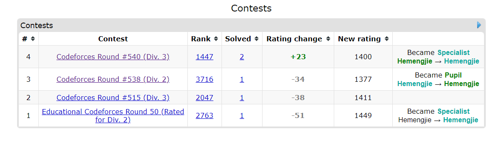

做题笔记之Codeforces Round #540 (Div. 3) 第二部分
比赛链接: Codeforces
题解链接: Codeforces
除了F2之外全部补全，宿舍太冷了。
D1 - Coffee and Coursework (Easy version)
一开始这题我觉得用贪心不可行，因为存在损耗这一说，效果好的完全可以留到第二天，但是dp又写不出一个好的方法。参考题解的贪心思路，是每次取最大的k个元素放入k天，枚举天数来实现的。
因为数据规模小，可以枚举一遍过。
1 |
|
D2 - Coffee and Coursework (Hard Version)
很明显数据范围达到210^5 再枚举显然超时，很容易想到用*二分搜索来降低复杂度。1
2
3
4
5
6
7
8
9
10
11
12
13
14
15
16
17
18
19
20
21
22
23
24
25
26
27
28
29
30
31
32
33
34
35
36
37
38
39
40
41
42
43
44
45
46
47
48
49
50
51
52
53
54
55
56
57
58
59
60
61
62
63
64
using namespace std;
long long n, m;
long long a[N];
bool judge(int day)
{
long long cur = 0;
//取最大的k个元素为 每天第一杯
//取次大的k个元素为 每天第二杯
//如此往复
//根据从大到小的顺序
//a0 ak ...
//a1 ak+1 ...
//a2 ak+2 ...
//ak-1 ak+3 ...
for (int i = 0; i < n; i++)
{
cur += max((long long)0, a[i] - i / day); //k个一组
}
if (cur >= m)
return true;
else
return false;
}
int main()
{
ios::sync_with_stdio(false);
cin.tie(0);
while (cin >> n >> m)
{
for (int i = 0; i < n; i++)
{
cin >> a[i];
}
//数据范围增大 遍历是否可行？
long long ans = N;
bool finish = false;
sort(a, a + n, greater<long long>());
//减少遍历次数 采用二分搜索
long long left=1;
long long right=N;
long long mid;
while(left<=right)
{
mid=(left+right)/2;
if(judge(mid))
{
ans = min(ans, mid);
finish = true;
right = mid - 1;
}
else
left = mid+1;
}
if (finish)
{
cout << ans << endl;
}
else
cout << -1 << endl;
}
}
E - Yet Another Ball Problem
构造算法 输出满足规则的二元组。
我的构造是根据dis距离来的，WA四次后，加了一个pre pair，如果现在输出的会违反相邻不等的规则，调换输出顺序即可，
具体可以看我的实现。
题解的实现很简洁巧妙，比我废了老大劲改出来的简单有效。
关于满足规则的证明，可以自己跑下输出看结果。1
2
3
4
5
6
7
8
9
10
11
12
13
14
15
16
17
18
19
20
21
22
23
24
25
26
27
28
29
30
31
32
33
34
35
36
37
38
39
40
41
42
43
44
45
46
47
48
49
50
51
52
53
54
55
56
57
58
59
60
61
62
63
64
65
66
67
68
69
70
71
72
73
74
75
76
77
78
79
80
81
82
83
84
85
86
87
88
89
90
91
92
93
94
95
96/*
#include <iostream>
using namespace std;
#define N 200020
long long n, k;
//配对：最多C[k][2]*2种二元有序对 max=k*k(k-1)/2;
int main()
{
ios::sync_with_stdio(false);
cin.tie(0);
while (cin >> n >> k)
{
long long max_kinds = k * (k - 1);
if (n > max_kinds)
{
cout << "NO" << endl;
continue;
}
else
{
cout << "YES" << endl;
int cnt = 0;
int dis = 1; //代表间距
int left = 1;
int right;
bool flag = false;
pair<int, int> pre;
while (cnt < n)
{
right = left + dis;
if (left <= k && right <= k && left > 0 && right > 0 && left != right)
{
flag = pre.first == left || pre.second == right;
if (flag)
cout << right << " " << left << endl;
else
cout << left << " " << right << endl;
cnt++;
if (cnt >= n)
break;
if (!flag)
{
cout << right << " " << left << endl;
pre.first = right;
pre.second = left;
}
else
{
cout << left << " " << right << endl;
pre.first = left;
pre.second = right;
}
cnt++;
if (cnt >= n)
break;
}
else
{
//溢出范围
//修改间距
left = 0;
dis++;
}
left++;
}
}
}
}
*/
//TODO:题解
using namespace std;
long long n, k;
int main()
{
ios::sync_with_stdio(false);
cin.tie(0);
while (cin >> n >> k)
{
if (n > k * (k - 1))
{
cout << "NO" << endl;
}
else
{
cout << "YES" << endl;
int cur = 0;
for (int i = 0; i < n; i++)
{
cur += (i % k == 0);
cout << i % k + 1 << " " << (cur + i % k) % k + 1 << endl;
//左边循环是1.2...k的重复循环 右边循环是+cur%k的循环
}
}
}
}
F1 - Tree Cutting (Easy Version)
树的结构与DFS
一开始我的做法是枚举删除的边，用DFS探索两边是否符合条件，提交再样例12处超时，后来考虑用记忆化搜索，改了很久，始终调不出来，可能我的写法存在问题不好实现。
参考题解
O(n)
的复杂度让我吓了一跳，英文题解可能写的不好懂，自己对着样子模拟一下递归调用就可以理解了。非常巧妙的递归调用，值得学习。
1 |
|
总结一下这次Div.3的题目，实际比赛里卡在回文矩阵那里做出两道，比Div.2做出一道有进步哈哈。不过也挺开心的起码从绿名爬回了青名。继续努力吧！

我是小师妹，不足之处欢迎指正！